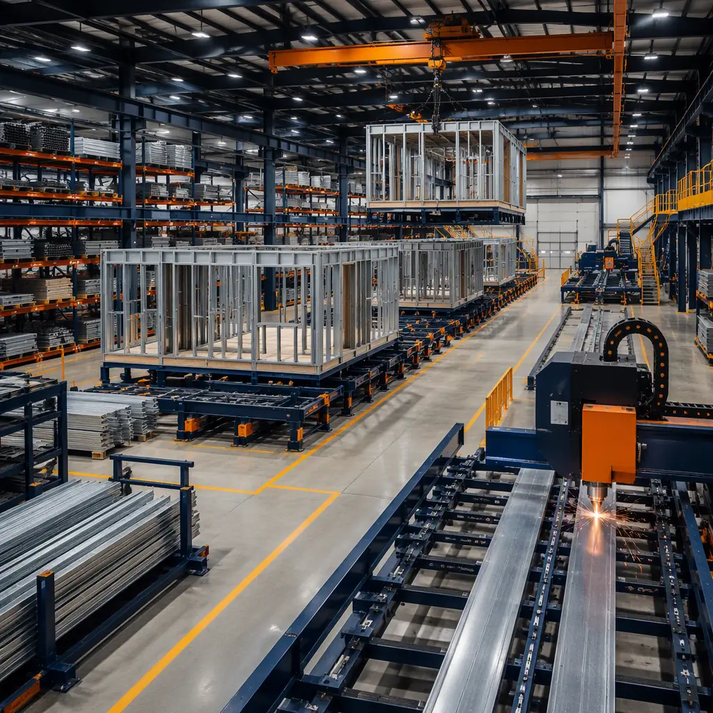
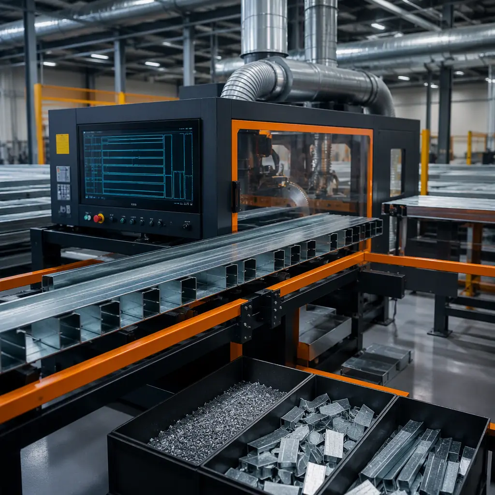
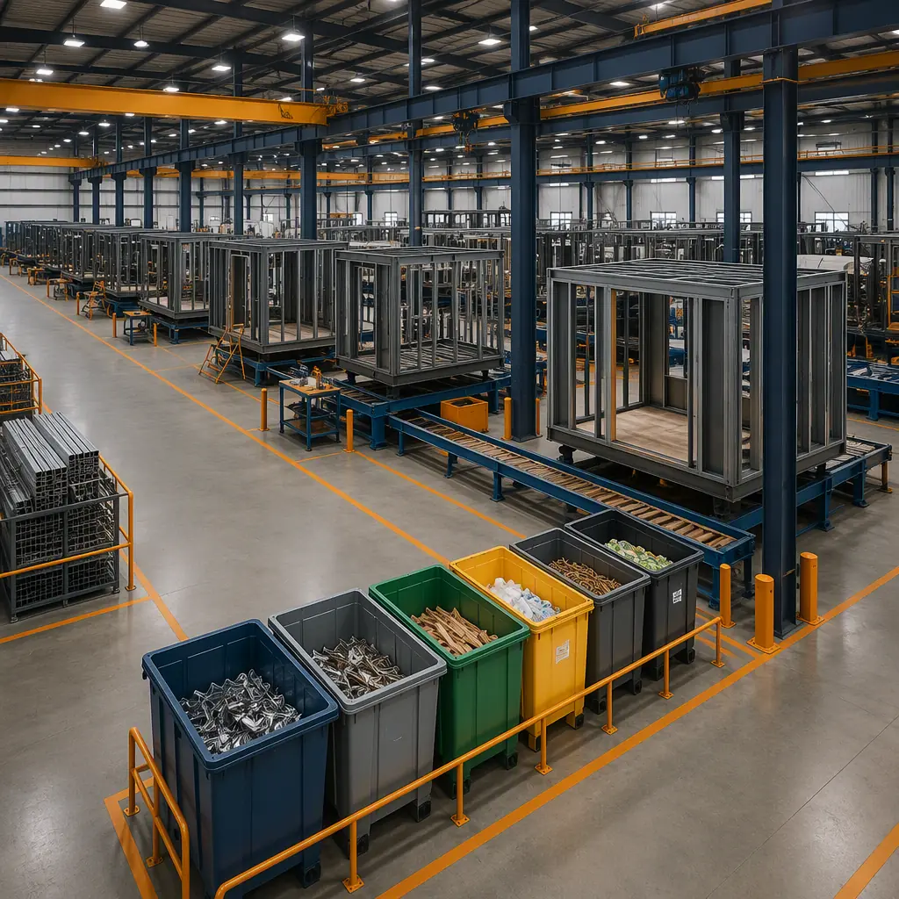

The construction industry is the world's largest consumer of raw materials and the largest generator of solid waste. The U.S. Environmental Protection Agency estimates that construction and demolition (C&D) activities produced 600 million tons of debris in 2018 — more than twice the amount of municipal solid waste generated in the same year. Of that 600 million tons, approximately 145 million tons came from new construction alone. The vast majority of this waste is generated on the jobsite: lumber cut to length and the offcuts discarded, drywall sheets cut to fit and the scraps thrown in the dumpster, packaging from materials delivered to site — cardboard, plastic wrap, pallets — that is contaminated with jobsite debris and unrecyclable. Modular construction transforms this model by moving 80–90% of the construction process into a factory, where material flows are controlled with manufacturing precision, waste is segregated at the source, and lean production principles eliminate the systemic inefficiencies that make construction the world's most wasteful industry. This article explains the waste reduction mechanisms, lean manufacturing principles, and material optimization strategies that make modular construction a fundamentally more resource-efficient way to build.

The Scale of Construction Waste: Why the Jobsite Model Is Broken
To understand why modular construction reduces waste by 70–90%, it is necessary to understand why conventional construction generates so much waste in the first place. The conventional construction model is a temporary manufacturing operation set up on a unique site for each project. Materials are delivered to the site — often weeks before they are needed, because the general contractor is managing schedule risk by ordering early. Those materials sit exposed to weather, vulnerable to damage, and subject to theft. When the trade contractor arrives to install them, they cut each piece to fit the as-built conditions — which, in a building erected by multiple trades working from 2D drawings, will deviate from the design dimensions by anywhere from a quarter-inch to several inches. The offcuts go in the dumpster. The packaging goes in the dumpster. The materials damaged by weather or mishandling go in the dumpster. The excess materials ordered as a 10–15% contingency against breakage and error — and not needed — go in the dumpster.
The result is that a typical wood-framed building generates 3–5 pounds of waste per square foot of constructed area. A typical commercial steel-framed building generates 2–4 pounds per square foot. For a 50,000-square-foot office building, that translates to 100,000 to 250,000 pounds — 50 to 125 tons — of construction waste, the majority of which goes to landfill. Recovery rates vary widely: well-managed projects with dedicated waste management plans may divert 50–75% of C&D waste from landfill; typical projects without dedicated waste management divert 30–40%. Even at the high end of recovery, a 50,000-square-foot building sends 12 to 30 tons of material to landfill — material that was purchased, delivered, handled, and discarded, at a cost to the project that is embedded in the contractor's general conditions and passed through to the owner.
Modular construction replaces the temporary, site-specific manufacturing operation with a permanent factory. The factory is a controlled environment where materials are stored indoors, protected from weather, and managed through an inventory system that tracks every sheet, stud, and fastener. Cutting is performed on CNC equipment that nests parts to maximize material utilization — a sheet of drywall or plywood that would yield 85% material utilization when cut by hand on a jobsite yields 95–98% when nested by software on a CNC saw. The offcuts that remain are segregated at the source: steel scrap in one bin, drywall scrap in another, wood in a third, cardboard and plastic packaging in dedicated recycling streams. Nothing goes into a commingled dumpster because there is no commingled dumpster — the factory waste stream is managed like a manufacturing waste stream, not a construction waste stream. For the carbon implications of this material efficiency, see our article on modular construction embodied carbon, which documents 30–50% lower upfront emissions compared to conventional construction.

Lean Manufacturing: The Five Principles That Eliminate Construction Waste
Lean manufacturing, developed by Toyota in the mid-20th century and since adopted by virtually every advanced manufacturing industry, is a systematic method for waste elimination. In the lean lexicon, "waste" (muda in Japanese) is any activity that consumes resources without creating value for the customer. The Toyota Production System identified seven categories of waste — and every one of them maps directly onto conventional construction practices. Modular construction, by contrast, addresses each through factory-based production:
- Overproduction. Producing more than is needed, or producing it before it is needed. In conventional construction, overproduction takes the form of ordering excess materials as contingency — 10–15% extra drywall, lumber, and finishes that will not be used. In modular construction, materials are ordered for specific modules on a just-in-time basis, matched to the production schedule. The factory's ERP system calculates exact quantities from the BIM model, and the purchasing department orders those quantities — no more, no contingency.
- Waiting. Idle time when workers, equipment, or materials are not being used productively. On a construction site, waiting is endemic: the drywall crew waits for the electrician to finish rough-in, the painter waits for the drywall finisher, the finish carpenter waits for the painter. In a modular factory, the production line is balanced so that each workstation completes its scope in a standardized cycle time, and the module advances to the next station on a takt time — the pace of production matched to customer demand. Workers are never waiting for work, and modules are never waiting for workers.
- Transportation. Unnecessary movement of materials between processes. On a construction site, materials are delivered to a laydown area, moved to a staging area, transported vertically by crane or hoist, and distributed horizontally across the floor — four or five material movements before the material reaches its point of installation. In a modular factory, materials flow in a straight line from receiving to staging to workstation, with the module moving past stationary workstations rather than workers moving around the module.
- Over-processing. Doing more work than the customer requires — re-cutting, re-fitting, re-finishing. In conventional construction, the two most common forms of over-processing are cutting materials to fit as-built conditions that deviate from design dimensions, and re-working installations that fail inspection because the conditions for quality — dry, clean, well-lit, accessible — do not exist on a construction site. In a modular factory, materials are cut once, to design dimensions, on CNC equipment. Installations are performed in controlled conditions and inspected at each quality gate before the module advances to the next station — eliminating re-work at the source.
- Defects. Work that must be re-done because it does not meet specifications. The Construction Industry Institute estimates that direct rework costs on construction projects average 5% of total project cost — and that does not include the schedule delays, the productivity losses, and the morale impacts that ripple outward from rework events. Modular construction's factory quality control system — with inspections at each production station, documented test results, and the ability to correct defects immediately, in the factory, before the module advances — reduces rework rates by 60–80% compared to site-built construction. For the quality systems that make this possible, see our article on modular construction QA/QC systems.
- Inventory. Excess materials, work-in-process, and finished goods that are not being processed. On a construction site, inventory takes the form of materials stored in laydown areas for weeks before installation — materials that are exposed to weather, consume working space, and represent working capital that is tied up in inventory rather than deployed productively. The modular factory's just-in-time procurement system reduces on-hand inventory to the materials needed for the current week's production, freeing capital and eliminating weather-related material degradation.
- Motion. Unnecessary movement of people — walking, reaching, bending, climbing. Studies of construction labor productivity have found that trade workers spend only 30–40% of their time on direct installation work; the remainder is spent on material handling, tool setup, layout and measurement, climbing and descending, and waiting. In a modular factory, each workstation is ergonomically designed for its specific task, with materials presented at working height, tools positioned within arm's reach, and the module positioned for optimal access — eliminating the motion waste that consumes the majority of a construction worker's day.
These seven waste categories are not academic abstractions — they are the mechanisms by which 40–60% of construction labor hours and 30–50% of construction materials are consumed without adding value to the finished building. For a financial perspective on how waste elimination translates to project economics, see our guide on modular construction cost per square foot.
Material Optimization: How CNC Precision Reduces Raw Material Consumption
The single largest contributor to construction waste is the difference between the dimensions of the material as purchased and the dimensions of the material as installed. Standard building materials come in standard sizes: 4×8-foot sheets of drywall and plywood, 8-foot, 10-foot, and 12-foot lengths of lumber and steel studs. A building designed in a CAD or BIM environment, by contrast, has dimensions that are determined by architectural and structural requirements — not by the dimensions of standard material sheets. The result is that every sheet and every stud must be cut to fit, and every cut generates an offcut.
In conventional construction, the person making those cuts is a trade worker on a jobsite, using a circular saw or a chop saw, measuring by hand with a tape measure — and cutting conservatively, because an offcut can be discarded but a piece cut too short must be replaced, at the cost of a new sheet or stud plus the labor to retrieve it, cut it, and install it. The worker's incentive is to minimize the risk of undercutting, which means maximizing the size of offcuts. Material utilization rates for site-cut framing lumber and drywall typically range from 80–88% — meaning 12–20% of the purchased material becomes waste before it is even installed.
In a modular factory, cutting is performed on CNC equipment controlled by software that nests parts for maximum material utilization. The BIM model — a digital twin of the finished building — generates cut lists that optimize the placement of each part on each sheet or length of material, minimizing the total area or length of offcuts. Material utilization rates in modular factories typically exceed 95% for sheet goods and 97% for linear materials. The difference between 85% utilization (site-built) and 95% utilization (factory-built) may not sound dramatic — it is only 10 percentage points — but across a 50,000-square-foot building that consumes 15,000 sheets of drywall and 20,000 linear feet of steel studs, it represents 1,500 sheets and 600 linear feet of material that is not purchased, not handled, not cut, and not discarded. At current material prices, the avoided material cost alone is $25,000–$40,000 — and that does not include the avoided labor to handle and cut the material, the avoided dumpster fees, or the avoided landfill tipping fees.

Packaging Waste and the Returnable Container Economy
Construction materials arrive on site in packaging that is designed for one-way transport: cardboard boxes, plastic shrink wrap, wooden pallets, steel banding. This packaging is essential for protecting materials during shipping and handling, but on a construction site, it becomes waste the moment the material is unpacked — and because the site's waste management infrastructure is a collection of commingled dumpsters, the packaging is typically contaminated with other construction debris and unrecyclable. Cardboard that would be clean and recyclable if collected separately becomes landfill-bound when it is thrown into a dumpster with drywall dust, paint cans, and lunch wrappers.
Modular construction addresses packaging waste at two levels. First, many of the materials that arrive at a modular factory arrive in bulk, not in individual packaging: steel studs arrive in strapped bundles, drywall arrives in unitized stacks, insulation arrives compressed on pallets. The packaging-to-material ratio is substantially lower than for jobsite-delivered materials, because the factory receives materials in quantities measured in truckloads, not individual units. Second, the factory's suppliers increasingly participate in returnable container programs: steel studs delivered in reusable steel racks, insulation delivered in returnable compression frames, fasteners delivered in refillable bins — all of which are returned to the supplier for reuse, eliminating single-use packaging from the supply chain entirely.
The factory itself generates a small amount of waste — offcuts, spent consumables, the occasional damaged component — but because this waste is generated in a single location with permanent waste management infrastructure, it is segregated at the source. Steel scrap goes to the metal recycler. Wood scrap goes to the biomass energy facility or the composite panel manufacturer. Drywall scrap goes to the gypsum recycler, where it is processed into new drywall or agricultural soil amendment. Cardboard and plastic are baled and sold to recycling processors. The factory diversion rate — the percentage of waste diverted from landfill — typically exceeds 85%, compared to 30–50% for a well-managed conventional construction project. For the broader sustainability framework that waste reduction fits within, see our article on LEED certification for modular construction.